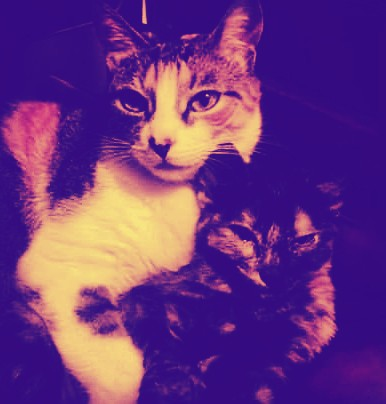

PRACTICA SECCIÓN 1.1
DESCRIPCION PERSONAL
Mi nombre es David Mauricio Alferez, tengo 16 años, vivo en Bogota Colombia con mi madre, mi hermana y mis dos gatos y estudio en el Colegio Saludcoop Norte. Este es mi ultimo año en el colegio y proximamente espero ingresar a la universidad.
Me encanta jugar video juegos y ver series y peliculas ademas me encanta jugar volleybal, es mi deporte favorito y me encanta cocinar, y gozar de mi tiempo libre para aprender cosas nuevas. Adoro las artes, pintura, dibujo y arte digital y espero poder desempeñarme como profesional en alguncampio relacionado.
Volleyball first person
En este video se nos presenta desde la perspectiva de primera persona un partido de volleybal
1. The Neighbourhood - Sweater Weathe
Esta canción es rock alternativa. El tema principal es sobre el amor que es dividido. La canción incluye metáforas creativas entre amor y la playa, una sueter y el frío.
2. The Neighbourhood - Daddy Issues
Podemos decir que la letra de esta canción nos habla de una relación donde la chica al parecer tuvo conflictos paternales y trata de superarlos con su relación amorosa.
ESTUDIOS REALIZADOS
| ESTUDIOS | GRADO | AÑO DE TERMINACION | INSTITUCIÓN |
|---|---|---|---|
| JARDIN | Prescolar | 2010 | Compensar |
| PRIMARIA | Grado 6° | 2015 | Saludcoop Norte |
| SECUNDARIA | Grado 11° | En curso | Saludcoop Norte |
| PROFESIONAL | ninguna | ninguna | ninguna |
MIS MASCOTAS
MI PASATIEMPO